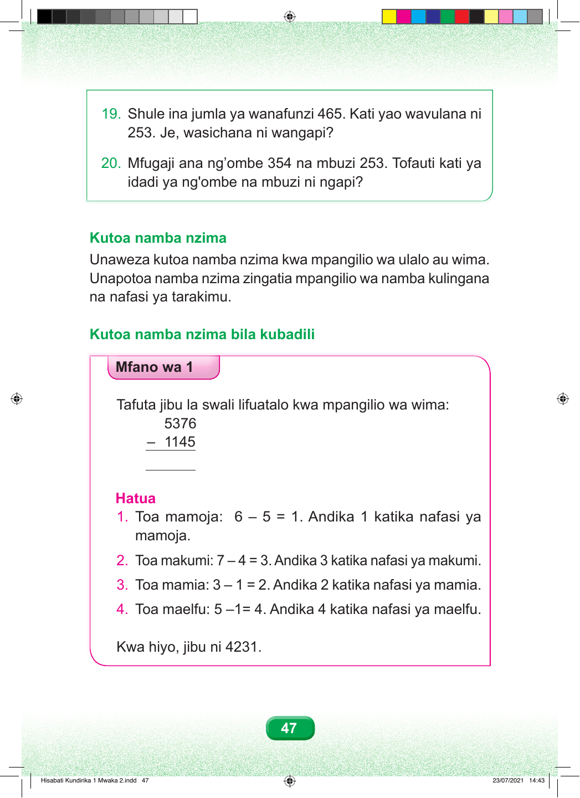

19. Shule ina jumla ya wanafunzi 465. Kati yao wavulana ni 253. Je, wasichana ni wangapi? 20. Mfugaji ana ng’ombe 354 na mbuzi 253. Tofauti kati ya idadi ya ng'ombe na mbuzi ni ngapi? Kutoa namba nzima Unaweza kutoa namba nzima kwa mpangilio wa ulalo au wima. Unapotoa namba nzima zingatia mpangilio wa namba kulingana na nafasi ya tarakimu. Kutoa namba nzima bila kubadili Mfano wa 1 Tafuta jibu la swali lifuatalo kwa mpangilio wa wima: 5376 – 1145 Hatua 1. Toa mamoja: 6 – 5 = 1. Andika 1 katika nafasi ya mamoja. 2. Toa makumi: 7 – 4 = 3. Andika 3 katika nafasi ya makumi. 3. Toa mamia: 3 – 1 = 2. Andika 2 katika nafasi ya mamia. 4. Toa maelfu: 5 –1= 4. Andika 4 katika nafasi ya maelfu. Kwa hiyo, jibu ni 4231. 47 Hisabati Kundirika 1 Mwaka 2.indd 47 23/07/2021 14:43